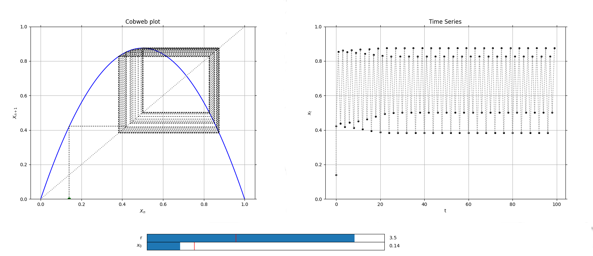

Cobweb
class phaseportrait.Cobweb(dF, initial_position, xrange, *, dF_args={None}, yrange=[], max_steps=100, n_points=100, **kargs)
A class used to represent a Cobweb plot and a time series to study the convergence of a 1D map x(t+1) = f(x).
Parameters
-
dF : callable
A dF type funcion.
-
initial_position : float
Initial x of the iteration.
-
xrange : list
Range of the x axis in the main plot.
Key Arguments
-
dF_args : dict
If necesary, must contain the kargs for the
dFfuncion. -
yrange : list
Range of the y axis in the main plot
-
max_steps : int, default=100
Maximum number of points to be represented.
-
n_points : int, default=10000
Number of points in the bisector.
-
Title : str, default='Cobweb plot'
Title of the plot.
-
xlabel : str, default=r'$X_{n}$'
x label of the plot.
-
ylabel : str, default=r'$X_{n+1}$'
y label of the plot.
Methods
Cobweb.plot
Cobweb.plot(*args, **kargs)
Creates two figures, one containing the Cobweb plot and other with the time series.
Returns
- tuple(matplotlib Figure (Cobweb plot), matplotlib Axis (Cobweb plot), matplotlib Figure (Time series), matplotlib Axis (Time series))
Cobweb.add_slider
Cobweb.add_slider(param_name, *, valinit=None, valstep=0.1, valinterval=10)
Adds a slider which can change the value of a parameter in execution time.
Parameters
- param_name : str
The string key of the variable. Must be the same as the key in the
dFfunction.
Key Arguments
-
valinit : float, default=None
Initial value of the parameter.
-
valinterval : Union[float, list], default=0.1
The range of values the slider of the parameter will cover.
-
valstep : float, default=10
Precision in the slider.
Returns
- None
Cobweb.initial_position_slider
Cobweb.initial_position_slider(*, valinit=None, valstep=0.05, valinterval=None)
Adds a slider for changing initial value on a cobweb plot.
Key Arguments
-
valinit : numeric
Initial position. Default value is the same as initial position given when initializing Cobweb object.
-
valinterval : Union[float, list]
The range of values the slider of the parameter will cover.
-
valstep : float
Precision in the slider.
Returns
- None
Examples
Logistic map cobweb plot and time series, defining the logistic map as a 1D dF function.
from phaseportrait import Cobweb
def Logistic(x, *, r=1.5):
return r*x*(1-x)
# Cobweb plot and time series.
LogisticCobweb = Cobweb(Logistic, 0.2, [0,1], dF_args={'r':1.5}, yrange=[0,1])
LogisticCobweb.add_slider('r', valinit=1.5, valinterval=[0,4])
LogisticCobweb.initial_position_slider(valstep=0.01)
LogisticCobweb.plot()
This will output the following plots:
